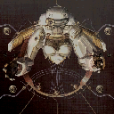

 Gunvalkyrie
Details
 |
|
| Spielzeit | Nicht gespielt |
| Letzte Aktivität | Nie |
| Hinzugefügt | 02.11.2022 20:19:55 |
| Modifiziert | 12.12.2022 1:16:07 |
| Fertigstellungsstatus | Not Played |
| Bibliothek | Playnite |
| Quelle | |
| Plattform | Microsoft Xbox |
| Veröffentlichungsdatum | 18.03.2002 |
| Community Bewertungen | |
| Kritiker Punkte | 51 |
| Benutzerwertung | |
| Genre | Adventure Shooter |
| Entwickler | Smilebit |
| Verleger | SEGA |
| Eigenschaft | Single Player |
| Links | Wikia Wikipedia Twitch |
| Tag | |
Beschreibung
Gunvalkyrie is an alternate history/science fiction video game developed by Smilebit and published by Sega for the Microsoft Xbox.
Originally developed for the Sega Dreamcast, it's visual style was very similar to the final Xbox version. The Dreamcast version's distinguishing feature was that during the game's development, GunValkyrie utilized a unique control scheme using both a light gun and a controller. This control scheme was dropped when development shifted to the Xbox version.
The gameplay is very different from most third-person shooters, due to a unique dual analog control scheme, which is the main contributor to the steep learning curve of the game. Players travel to various worlds investigating the disappearance of several colonies, with only giant mutated insect creatures left behind. These insects comprise the bulk of the enemies you face along the way.
Players control Kelly or Saburouta with both analog sticks, the left controlling forward/backward movement and turning, while the right aims their weapons, and when clicked, allows quick-turns. Clicking in the left stick while pointing in a direction causes the character to boost. The left trigger is a boost/jump, and when combined with the left analog boost, can be strung together into combos to keep the player off the ground entirely, which is a necessity for some levels. Face buttons are used to select weapons, and the right trigger fires the selected weapon.
The game comprises ten levels, the story unfolding via text between levels, or the occasional in-game cutscene. At the beginning of most levels, excluding boss battles, you have the choice of picking either Kelly or Saburouta. Kelly's primary weapon is fast but weaker, and she's overall faster and more maneuverable. Saburouta is slower, has more limited maneuverability in the air, and carries a stronger primary weapon, the Matchlock Cannon. Basically the two characters make up the two difficulty settings, with Kelly being the "Normal", and Saburouta being the "Advanced" setting. The real difference being that Kelly's style allowed several lock-on targets, while Saburouta's weapon splashed and was aimed at specific targets. Because of this, Kelly's gameplay is more frantic and requires less direct focus, while Saburota required specific aiming and direct attacks to be effective. Kelly is also the only character to upgrade her gearskin.
The artistic style of the game is similar to the steampunk subgenre of fiction, but the game's designers prefer to call it "elec-punk," described as a step even further, with the harnessing of electricity for imaginative new uses. The game's stages are divided into indoor mechanical looking levels, with lots of gears and ornate metalwork, and outdoor stages, set in very organic looking valley's, craters, and other fantastic otherworldly locations.
Originally developed for the Sega Dreamcast, it's visual style was very similar to the final Xbox version. The Dreamcast version's distinguishing feature was that during the game's development, GunValkyrie utilized a unique control scheme using both a light gun and a controller. This control scheme was dropped when development shifted to the Xbox version.
The gameplay is very different from most third-person shooters, due to a unique dual analog control scheme, which is the main contributor to the steep learning curve of the game. Players travel to various worlds investigating the disappearance of several colonies, with only giant mutated insect creatures left behind. These insects comprise the bulk of the enemies you face along the way.
Players control Kelly or Saburouta with both analog sticks, the left controlling forward/backward movement and turning, while the right aims their weapons, and when clicked, allows quick-turns. Clicking in the left stick while pointing in a direction causes the character to boost. The left trigger is a boost/jump, and when combined with the left analog boost, can be strung together into combos to keep the player off the ground entirely, which is a necessity for some levels. Face buttons are used to select weapons, and the right trigger fires the selected weapon.
The game comprises ten levels, the story unfolding via text between levels, or the occasional in-game cutscene. At the beginning of most levels, excluding boss battles, you have the choice of picking either Kelly or Saburouta. Kelly's primary weapon is fast but weaker, and she's overall faster and more maneuverable. Saburouta is slower, has more limited maneuverability in the air, and carries a stronger primary weapon, the Matchlock Cannon. Basically the two characters make up the two difficulty settings, with Kelly being the "Normal", and Saburouta being the "Advanced" setting. The real difference being that Kelly's style allowed several lock-on targets, while Saburouta's weapon splashed and was aimed at specific targets. Because of this, Kelly's gameplay is more frantic and requires less direct focus, while Saburota required specific aiming and direct attacks to be effective. Kelly is also the only character to upgrade her gearskin.
The artistic style of the game is similar to the steampunk subgenre of fiction, but the game's designers prefer to call it "elec-punk," described as a step even further, with the harnessing of electricity for imaginative new uses. The game's stages are divided into indoor mechanical looking levels, with lots of gears and ornate metalwork, and outdoor stages, set in very organic looking valley's, craters, and other fantastic otherworldly locations.